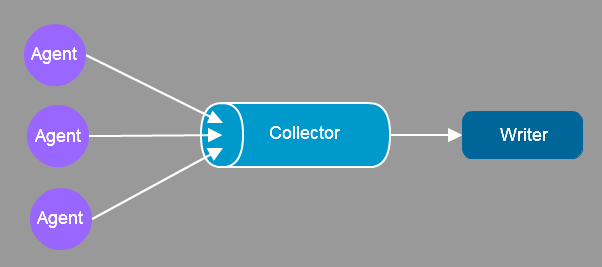
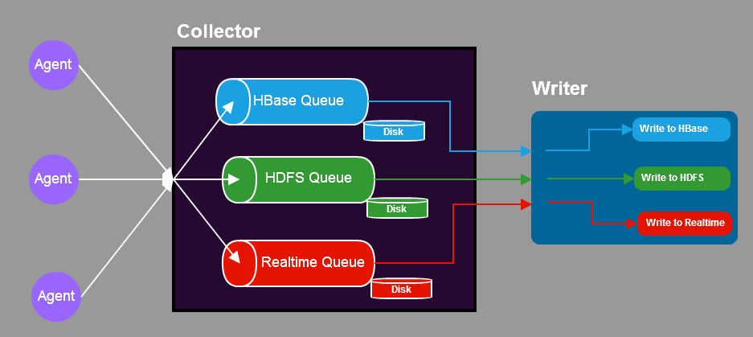
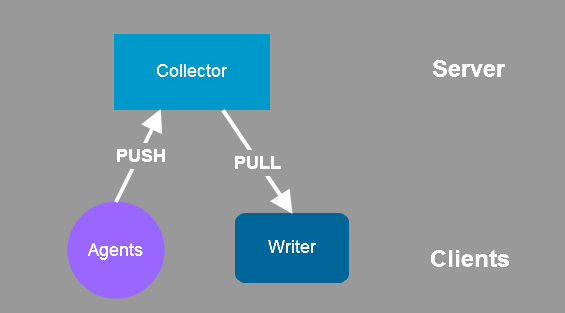

Collector Design and Implementation
功能
Collector负责从Agent端接收数据，缓存到本地，然后供Writer端消费.

-
大量Agent会将自己采集的到的数据发往Collector
-
Collector会将收到的数据进行缓存
-
Writer会来消费Collector的数据
-
Collector的会将Writer消费掉的数据清除掉
数据流
上面说了Collector的主要功能，下面当前Collector实现中的数据流：

三种角色
-
Agent: 嵌入到应用中，采集日志并发往Collector
-
Collector: 从Agent接收数据，并等待Writer消费
-
Writer: 消费Collector消费数据，并地发往最终的目的地
问题
-
Writer需要把数据发往多种目的地
-
就要考虑到发往任何一个目的地失败时，如何为这个特有的目的地缓存数据
-
Writer本应实现缓存功能，这样就会使Writer复杂化，且Collector已经有了缓存功能
-
扩展Collector解决该问题
-
Collector 根据配置可以将一份数据缓存多份
-
每份数据用作不同的用途
-
Writer消费时指明消费哪份数据
-
好处
-
简化了Writer的设计
-
缓存集中在Collector处理，方便维护与扩展
Collector的实现
-
Collector为每种用途建立了一个Queue实例
-
Agent过来的每份数据，放入每一个Queue实例
-
Writer每次消费时，指明要消费的Queue实例
为什么不用引用Queue
-
可以看出当前的解决的方案积大的浪费了空间
-
这是因为早期所需的Queue实例不多
-
关键是这种方案简单，可维护性，前期可以提高开发速度
-
随着目的地的增多，某个时候可以改变实现方案，使用引用queue
架构图
Server Client模式
上面看了数据流图，但不能被数据流误导，在实现上Collector与Agents Writer的关系实际是Server-Client的关系：

Collector内部实现
运行时对象图
时序图
metrics
jmx
qeue
配置